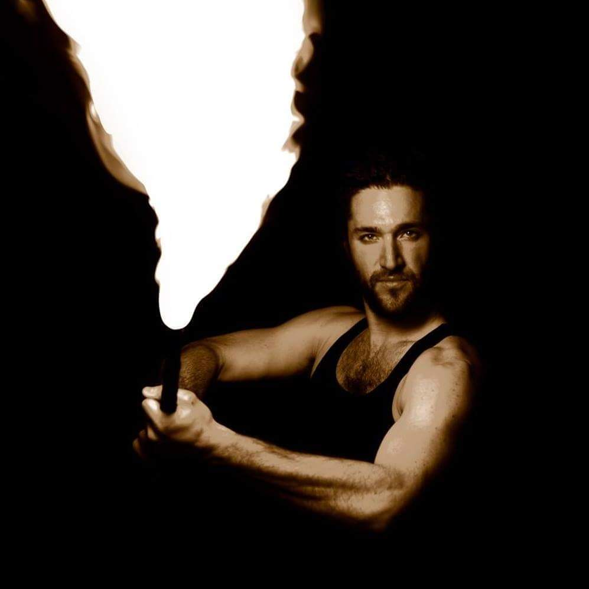

Entertaining audiences with the spectacle of fire for 10 years and counting!

It all started about a decade ago, I was at a bar in Fort Wayne, Indiana where I observed a group of people manipulating objects illuminated with LEDs (hula hoop, poi, staff, fans) with their bodies in a smooth and stylish dance. I was immediately intrigued, so I decided to introduce myself to them. After many questions about this new art form, I learned that it was called flow arts or object manipulation, and it has been around for more than 1,000 years. I exchanged information with a few people in the group and started to frequent their meetings and practices.
I tried practicing with each prop for a few days until I found something that really spoke to me: the contact staff, a five foot long by one inch thick pole with weighted ends. I loved how smoothly I could roll it over my body making fluid motions. I practiced daily for about six months before I was invited to attend my first Kinetic Fire Flow Festival, a three day workshop/campout where professional fire spinners from across the globe come to teach and perform for the community. It was there that I first tried spinning my contact staff lit on fire!
I had just performed my first “burn,” which is not an injury. It’s a term used to describe the session of spinning a prop while on fire, but yes, I received many real burns along the way too. After this, I was instantly hooked! I had never felt an adrenaline rush quite like it. It felt surreal to perform a dance harnessing the destructive element of fire. This was the start of what would become the obsession of my 20s.
Our crew of fire spinners grew stronger with each daily practice, while we continued to attend annual fire festivals. Halfway into our third year together we decided to form a fire performance company, and Pyroscope Entertainment was born! We were elated, as we were finally getting paid to share our favorite activity with the world! We started with small shows in friends’ backyards, later moving on to local festivals in our hometown, then to out-of-state festivals and art gallery openings. These were some of the most exciting years of my life!
Years later, I decided it was time for a change of scenery, and I hastily picked up my life (or what I could fit in my Pontiac Grand Prix) and moved across the country landing in Denver, Colorado. It quickly felt like home, as I immediately befriended the local fire spinners of my new hometown. I decided this time to form my own freelance fire spinning company --Infinite Inferno Entertainment. IIE was established in 2016 and continues to keep the fire alive year after year!